ROInets 2 - Amplitude envelope connectivity analysis
This example shows how to examine functional connectivity using amplitude envelope correlations for a signal subject.
This example shows how to use low-level ROInets functionality to compute parcel timecourses and perform orthogonalization using SPM objects
First, we will load an SPM object containing our data, and select a parcellation for the analysis
D = spm_eeg_load(fullfile(osldir,'example_data','roinets_example','subject_1')); spatial_basis_file = fullfile(osldir,'parcellations','fmri_d100_parcellation_with_PCC_reduced_2mm_ss5mm_ds8mm.nii.gz');
In general, an SPM MEEG object may have multiple online montages corresponding to sensor space, source space, parcellated data, and orthogonalized data (refer to the Preprocessing tutorial for more information about online montages). When an MEEG object is passed to ROInets, the active montage must be in source space i.e. with the same number of channels as there are voxels in the parcellation. You can print a list of the montages stored in the MEEG object using the has_montage() function
has_montage(D)
*0 - none (276 channels) 1 - without weights normalisation, class 1 (3559 channels) 2 - with weights normalisation, class 1 (3559 channels)
The first line of output shows that there are 276 channels in sensor space, and the asterisk shows that this is the selected montage. The MEEG file has 2 available online montages, and we will select the second one. Note that there are 3559 channels, one for each voxel in the 8mm grid
D = D.montage('switch',2)
SPM M/EEG data object
Type: continuous
Transform: time
1 conditions
3559 channels
11251 samples/trial
1 trials
Sampling frequency: 250 Hz
Loaded from file /Users/romesh/oxford_postdoc/toolboxes/osl/example_data/roinets_example/subject_1.mat
2 online montage(s) setup
Current montage applied (0=none): 2 ,named: "with weights normalisation, class 1"
Use the syntax D(channels, samples, trials) to access the data
Type "methods('meeg')" for the list of methods performing other operations with the object
Type "help meeg/method_name" to get help about methods
We can load the spatial basis file to confirm the grid size and number of parcels. 23x27x23 corresponds to an 8mm grid, and there are 38 brain regions
spatial_basis = read_avw(spatial_basis_file); size(spatial_basis)
ans =
23 27 23 38
To view the parcellation, you can open the spatial basis file in fslview. Each volume corresponds to one parcel - you can cycle through the volumes to view each parcel. Note that the parcellation is weighted, which is reflected in fslview as the gradient of colours in each volume. The parcel is also overlapping, because each voxel may belong to more than one parcel. Can you identify which voxels in the first parcel are also present in the second parcel?
fslview(spatial_basis_file)
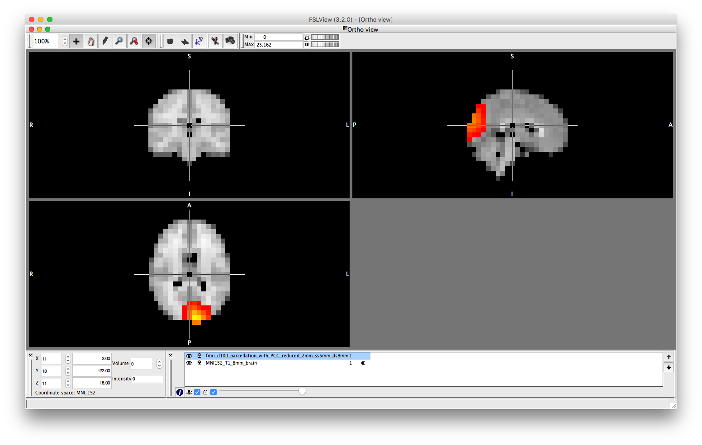
You can also get information about the parcellation by loading it into an OSL Parcellation object. The resolution is 8 and n_parcels confirms there are 38 brain regions. n_voxels corresponds to the number of voxels in the template mask - here 3559 agrees with the number of channels in the MEEG object. You can display the parcellation from within Matlab using the plot() method of the parcellation object. Use the dropdown list to view each of the parcels.
p = parcellation(spatial_basis_file) p.plot
p =
parcellation with properties:
weight_mask: [23×27×23×38 double]
template_mask: [23×27×23 double]
template_coordinates: [3559×3 double]
template_fname: '/Users/romesh/oxford_postdoc/toolboxes/osl/std_masks/MNI152_T1_8mm_brain.nii.gz'
labels: {38×1 cell}
is_weighted: 1
is_overlapping: 1
resolution: 8
n_parcels: 38
n_voxels: 3559
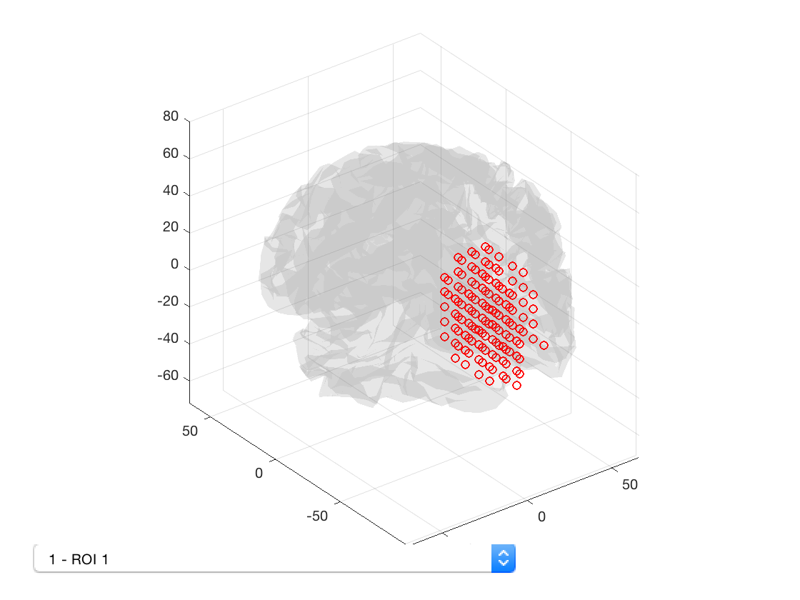 Our first task is to compute a timecourse for each parcel. This is done using ROInets.get_node_tcs e.g. D = ROInets.get_node_tcs(D,spatial_basis_file,'pca'). However, the PCA method only works if the parcellation is binary and non-overlapping. Recall that our original .nii file contained a matrix corresponding to the weighted parcellation. Instead of specifying a .nii file, we can specify a matrix of voxel assignments n_voxels x n_parcels. The advantage of this approach is that we can manipulate the matrix directly within Matlab to process it before passing it to ROInets. Here, we can assemble the parcellation matrix by first binarizing the original parcellation (removing the overlap and weights), which yields a binary mask that is 23x27x23x38. We can then convert this to the 3559x38 matrix that is required by ROInets. Both of these operations are built into the OSL parcellation object.
size(p.binarize) % Binarize the voxel assignments size(p.to_matrix(p.binarize)) % Reshape from volume to matrix representation D = ROInets.get_node_tcs(D,p.to_matrix(p.binarize),'pca') % Use ROInets to get parcel timecourses
ans =
23 27 23 38
ans =
3559 38
get_node_tcs: Finding PCA time course for ROI 1 out of 38
No new channels information : setting channels info automatically.
SPM M/EEG data object
Type: continuous
Transform: time
1 conditions
38 channels
11251 samples/trial
1 trials
Sampling frequency: 250 Hz
Loaded from file /Users/romesh/oxford_postdoc/toolboxes/osl/example_data/roinets_example/subject_1.mat
3 online montage(s) setup
Current montage applied (0=none): 3 ,named: "Parcellated with weights normalisation, class 1"
Use the syntax D(channels, samples, trials) to access the data
Type "methods('meeg')" for the list of methods performing other operations with the object
Type "help meeg/method_name" to get help about methods
The result of running ROInets is that a new online montage is created and selected. This online montage corresponds to the activity timecourses for each parcel. Because the active montage now has has 38 channels, if we tried to run get_node_tcs again, an error would be thrown because the wrong montage is selected - to repeat get_node_tcs(), it would be necessary to first run D = D.montage('switch',2)
has_montage(D)
0 - none (276 channels) 1 - without weights normalisation, class 1 (3559 channels) 2 - with weights normalisation, class 1 (3559 channels) *3 - Parcellated with weights normalisation, class 1 (38 channels)
We can extract the timeseries from the D object and compute the parcelwise distribution of power. This can then be displayed as a spatial map, using fslview or using the Parcellation object. To display the power distribution in fslview, you need to write a '.nii' file. You can use the savenii() method of the parcellation object to automatically map the vector of parcel power values onto the 8mm standard mask, and save it to disk. You can then open the resulting file using fslview.
ts = D(:,:,:); ts = ft_preproc_bandpassfilter(ts, D.fsample, [8 12], 4, 'but','twopass','no'); parcel_power = sum(abs(ts),2)/size(ts,2)/(D.time(end)-D.time(1)); p.plot_activation(parcel_power); p.fslview(parcel_power);
Warning - parcellation is being binarized Warning - parcellation is being binarized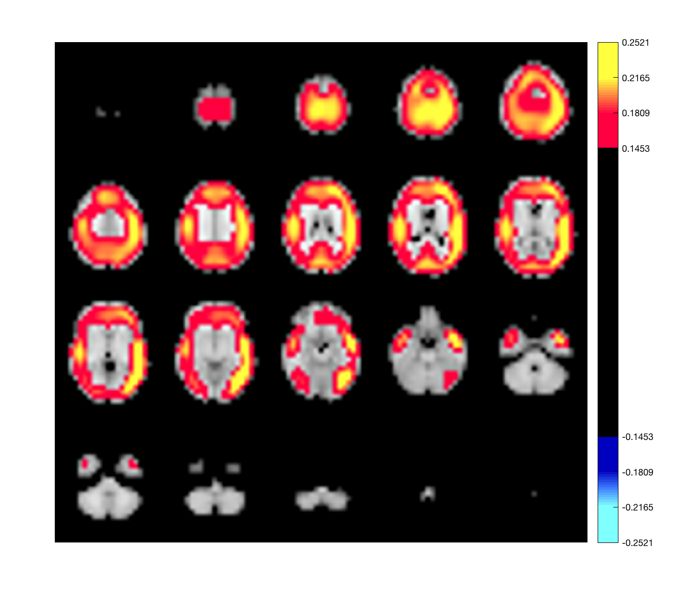
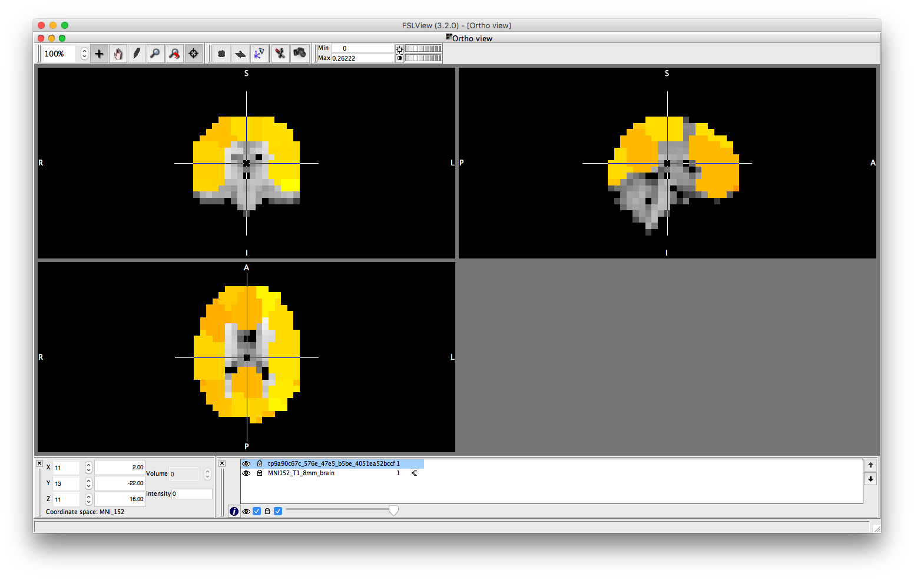
This could be compared to power distribution computed using the original voxel data without any parcellation.
D = D.montage('switch',2); ts = D(:,:,:); ts = ft_preproc_bandpassfilter(ts, D.fsample, [8 12], 4, 'but','twopass','no'); voxel_power = sum(abs(ts),2)/size(ts,2)/(D.time(end)-D.time(1)); p.plot_activation(voxel_power);
We could also plot seed-based power differences. For example, the first parcel is in the left occipital cortex. We can plot the power difference between this region and all others
p.plot_activation(parcel_power-parcel_power(1),0.1);
Warning - parcellation is being binarized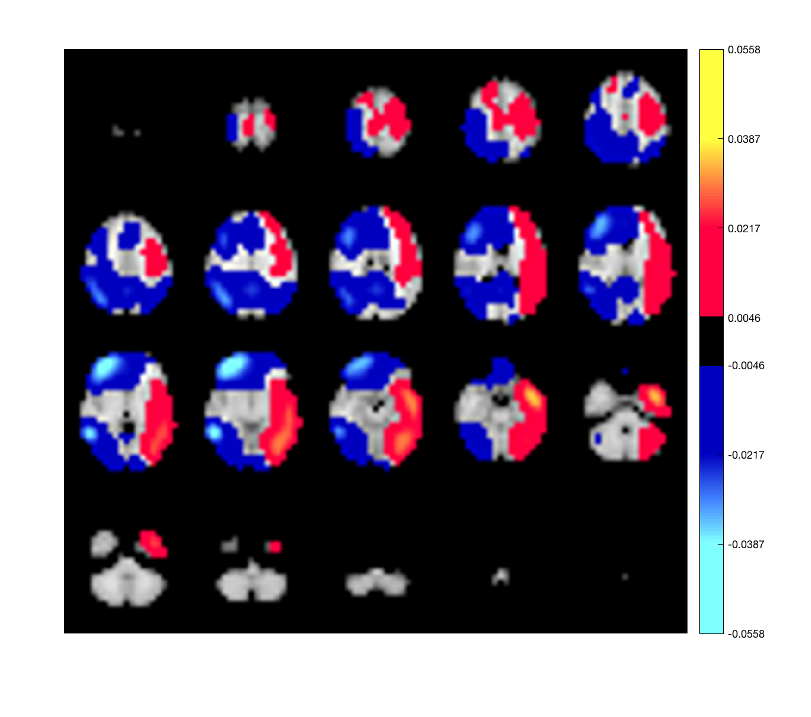
Switching back to the parcel montage, we can compute the Hilbert envelope timecourses
D = D.montage('switch',3); ts = D(:,:,:); Hen = hilbenv(ts); figure plot(D.time,ts'); xlabel('Time (s)') ylabel('Raw signal') figure plot(D.time,Hen'); xlabel('Time (s)') ylabel('Amplitude envelope value')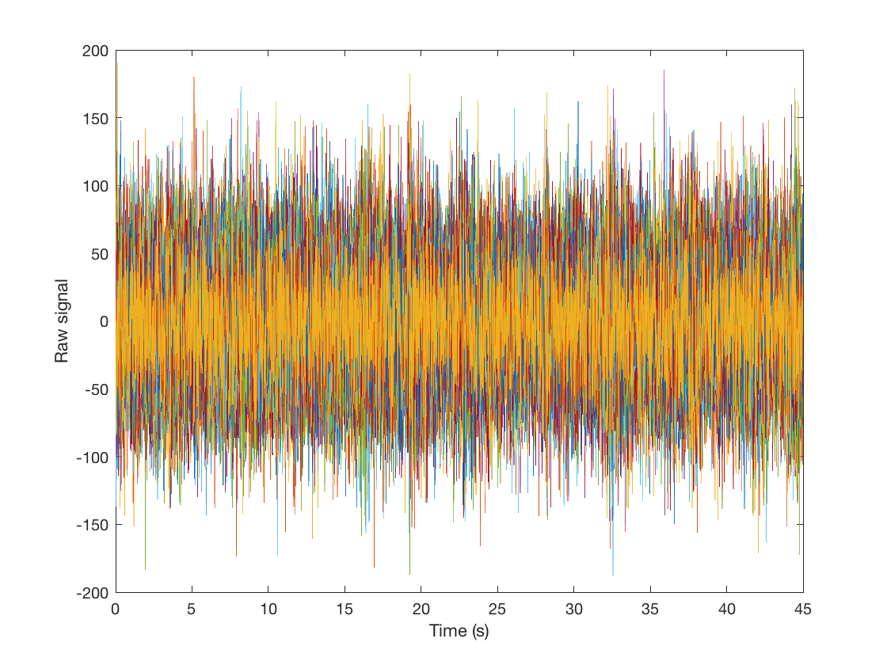 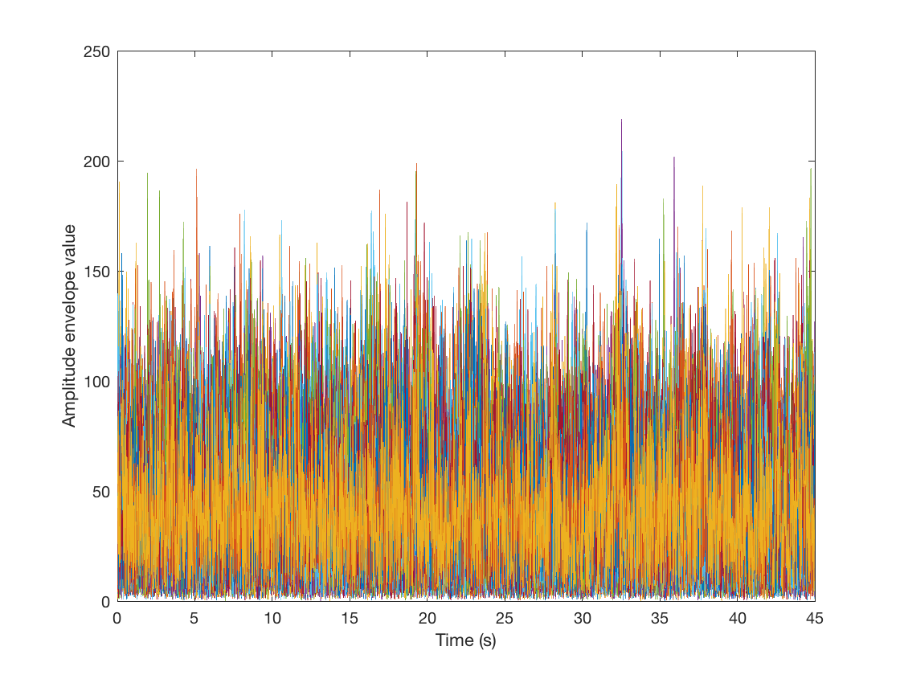
And then can plot the amplitude envelope correlation. Note that the correlations along the diagonal are suppressed by adding NaNs, to improve clarity of the plots.
figure imagesc(corr(Hen')+diag(nan(38,1))) axis square colorbar title('Envelope correlation before leakage correction')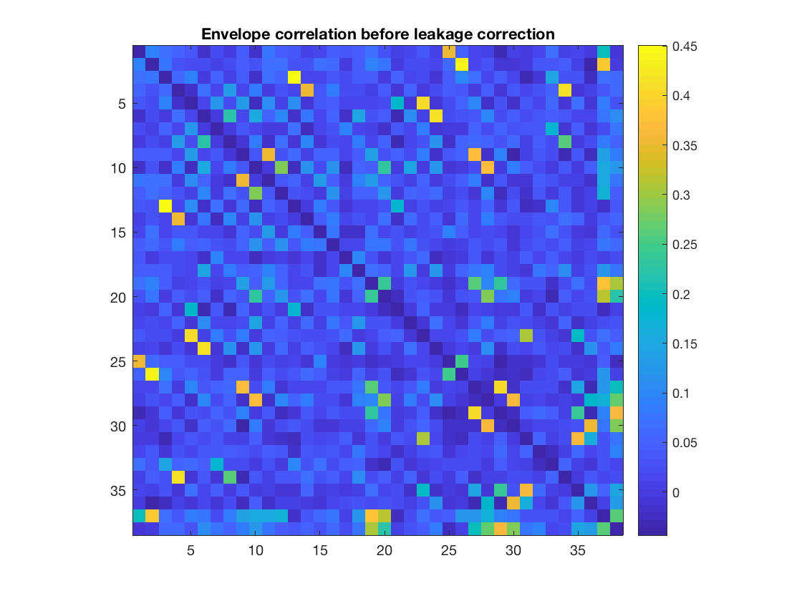
However, due to spatial leakage, there are spurious correlations between parcels that have been introduced by the beamforming process. If we plot the raw correlation matrix, we can see that there are strong correlations present. These reflect a combination of real correlations, and beamformer-induced correlations.
figure imagesc(corr(ts')+diag(nan(38,1))) axis square colorbar set(gca,'CLim',[-1 1]) title('Raw correlation before leakage correction')

We can correct for spatial leakage using ROInets.remove_source_leakage, which implements the orthogonalization procedure presented in Colclough et. al. (2015). This function operates on the D file directly. To use this function, the the active montage needs to be the one with the parcel timecourses
D = D.montage('switch',3); D = ROInets.remove_source_leakage(D,'symmetric');
No new channels information : setting channels info automatically.
The resulting MEEG object now has a new online montage corresponding to the orthogonalized parcel timecourses
has_montage(D)
0 - none (276 channels) 1 - without weights normalisation, class 1 (3559 channels) 2 - with weights normalisation, class 1 (3559 channels) 3 - Parcellated with weights normalisation, class 1 (38 channels) *4 - symmetric (38 channels)
We could also operate on the vector of data directly - this can be useful if your data are not being stored in an MEEG object. The same syntax can be used for ROInets.get_node_tcs if your original data are not MEEG objects.
D = D.montage('switch',3); ts_lc = D(:,:,:); ts_lc = ROInets.remove_source_leakage(ts,'symmetric');
Recall that the effect of signal orthogonalization is to remove ALL zero lag correlations in the raw timecourses. If we now plot the raw correlation matrix for the orthogonalized data, we can verify that no correlations remain.
figure imagesc(corr(ts_lc')+diag(nan(38,1))) axis square colorbar set(gca,'CLim',[-1 1]) title('Raw correlation after leakage correction')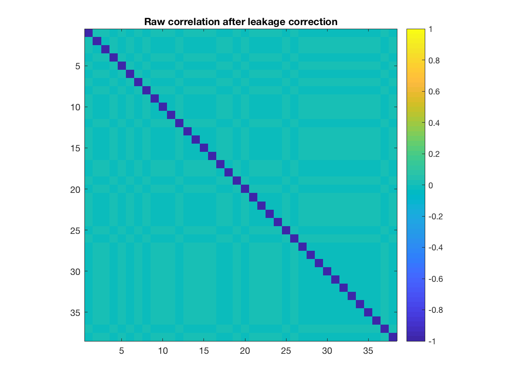
However, this does not remove correlations in the amplitude envelope, which are typically used as an estimate of MEG functional connectivity.
Hen_lc = hilbenv(ts_lc); figure imagesc(corr(Hen_lc')+diag(nan(38,1))) axis square colorbar title('Envelope correlation after leakage correction')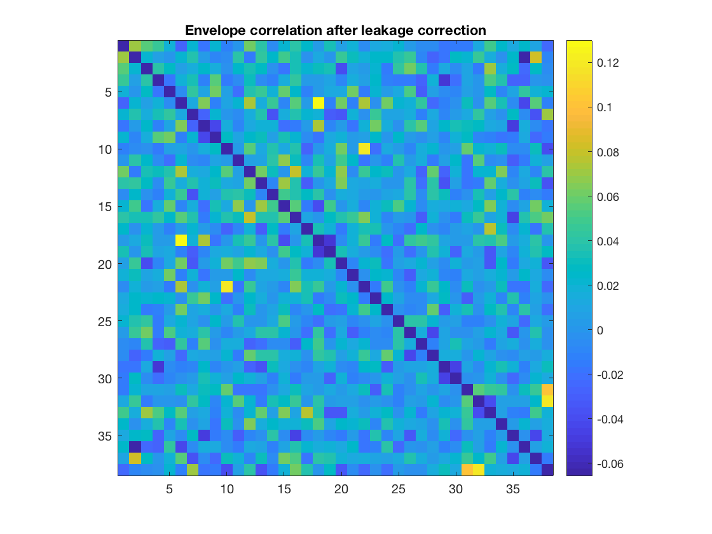
As discussed by Brookes et al. (2011) and Luckhoo et al. (2012), downsampling the amplitude envelope timeseries enhances functional connectivity measures between regions that are known to be connected. However, there is a trade-off in that reducing the number of samples also increases the magnitude of correlations between regions that are actually not connected. We can try computing the correlations with downsampling to 10Hz, and downsampling to 1Hz. The resampling should be done using Matlab's resample() function, because this incorporates a low-pass filter. It is important that you do NOT simply select a subset of the data points e.g. reducing the sampling rate by a factor of 10 should be done with resample(data,1,10) and NOT with data(1:10:end,:)
figure imagesc(corr(resample(Hen_lc',10,D.fsample))+diag(nan(38,1))) axis square colorbar title('Envelope correlation after leakage correction and downsampling to 10Hz') figure imagesc(corr(resample(Hen_lc',1,D.fsample))+diag(nan(38,1))) axis square colorbar title('Envelope correlation after leakage correction and downsampling to 1Hz')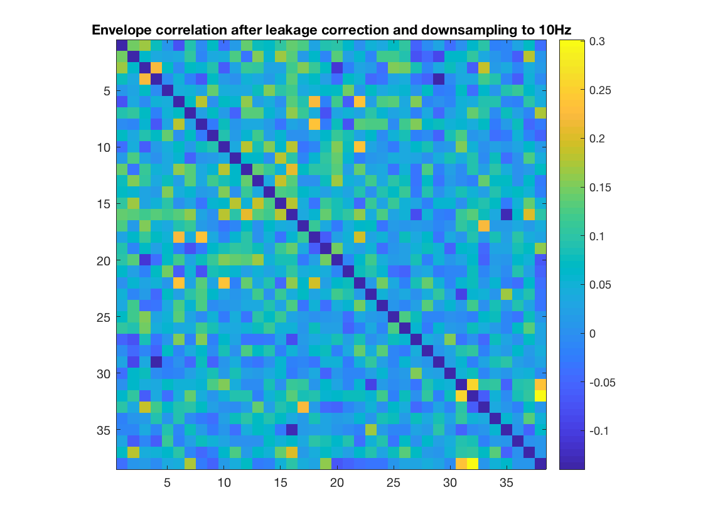 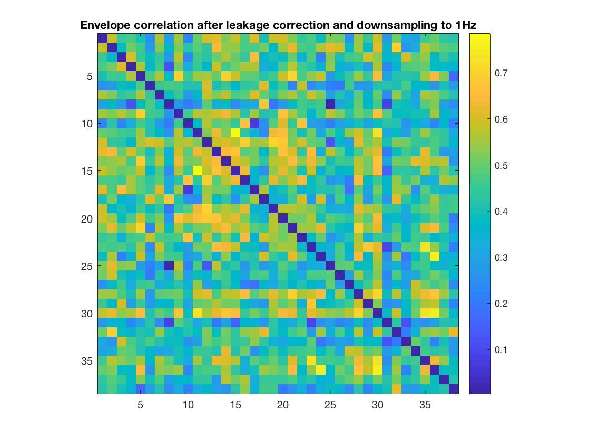
Note how the correlations become stronger as the sampling frequency is reduced. The extent to which you can downsample your data depends on the quantity of data. Because the recording is only 45 seconds long, downsampling to 1Hz means that the correlation is computed using only 45 samples, which is not enough to robustly estimate connectivity.
A procedure for quantitatively estimating the optimal sampling rate is provided in Luckhoo et al. (2012). As a point of comparison, we would typically use a sampling rate of 1Hz for resting state recordings around 500s in length.